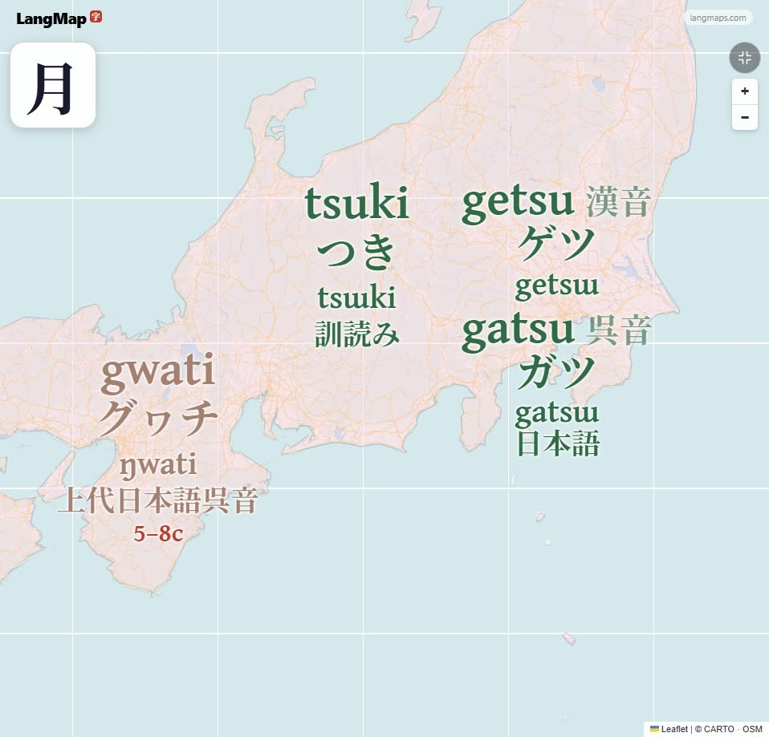

Sinosphere · · revised · Facebook post
峠 and 働 Did Not Come from China
- 峠 "mountain pass" and 働 "to work" were made in Japan, not China.
- These Japan-made characters, kokuji, follow the same building rules as Chinese characters.
- A few of them even travelled back to China, like 腺 "gland."

Contents
Japan made them
峠 and 働 did not come from China.
Japan made them.
Chinese characters reached Japan more than 1,500 years ago. But once they were adapted to write Japanese, people sometimes needed characters for Japanese words and meanings that existing characters did not conveniently express.
So they made new ones.
These Japan-made characters are called 国字 kokuji, literally "national characters."
Built by the old rules
Many were built using the same principles already used to construct Chinese characters: combining meaningful parts (会意 kaii), or pairing a meaning component with a sound hint (形声 keisei).
峠 tōge, "mountain pass"
山 mountain + 上 up + 下 down
The character pictures the point where the climb becomes the descent.
働 hataraku, "to work"
人 person + 動 move
This one became so ordinary that it is now taught in Japanese elementary school and belongs to the standard Jōyō Kanji list. It is also one of the few kokuji with a Sino-Japanese style reading, dō, taken over from 動.
凧 tako, "kite"
usually read as a "wind" element (an abbreviated 風) + 巾 "cloth"
Kites themselves came from China, where they were written 紙鳶, "paper kite." The character 凧 may have begun as a fusion of 鳳巾, an older written form for "kite." What Japan added was a one-character spelling.
雫 shizuku, "drop"
雨 rain + 下 below
Characters for Japanese words
Most ordinary kanji carry two kinds of reading. On the Han Map at the top of this article, 月 "moon" has the native Japanese word tsuki and the borrowed Chinese readings getsu and gatsu; the Han Map even shows an older Go-on form, gwati.
A kokuji usually works the other way round. It starts from a native Japanese word that had no neat Chinese match and gives it a character of its own. So most kokuji have only a native reading. That is exactly why 働, with its extra dō, stands out.
Fish make up an especially large group: 鰯 iwashi "sardine," already written this way in the 8th century, 鱚 kisu "sillago," and 鱈 tara "cod." Others belong to Shinto and everyday life: 榊 sakaki, the sacred tree, is simply 木 "tree" + 神 "god"; 辻 tsuji, a crossroads, is "road" + 十 "cross."
Japan created far more of these than most people realize. Depending on how rare and regional forms are counted, specialist dictionaries record more than 1,500 kokuji.
Most remained Japanese.
The road back to China
But a few travelled the other way.
One striking example is 腺 sen, "gland." It was coined in Japan around 1800 for Western anatomy, by the Dutch-studies scholar Udagawa Genshin, to translate Dutch klier. It combines 月 "flesh, body" with 泉 sen "spring": a body part that wells up with liquid.
The character later entered Chinese, as xiàn, and Korean, and is now completely ordinary in Chinese:
乳腺 "mammary gland"
汗腺 "sweat gland"
鱈 "cod" made the same journey. It is now the ordinary Chinese character for the fish, read xuě (simplified 鳕).
Not a one-way street
So the movement of Chinese characters was not entirely one-way.
China gave Japan its writing system.
Japan borrowed the system, then used those same rules to give single characters to Japanese words: a mountain pass, a kite, a sacred tree, a cod.
Japan occasionally added new characters to the system, and in a few cases sent them back.